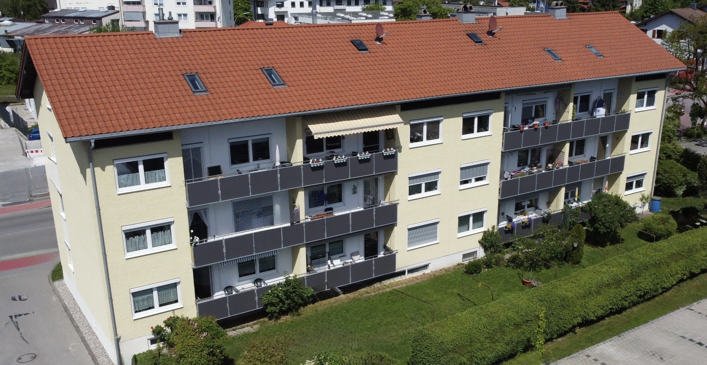
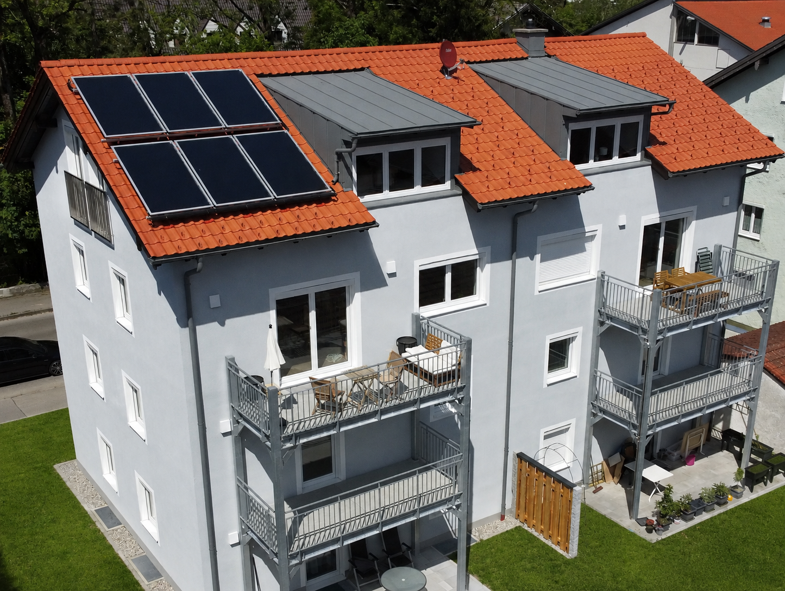
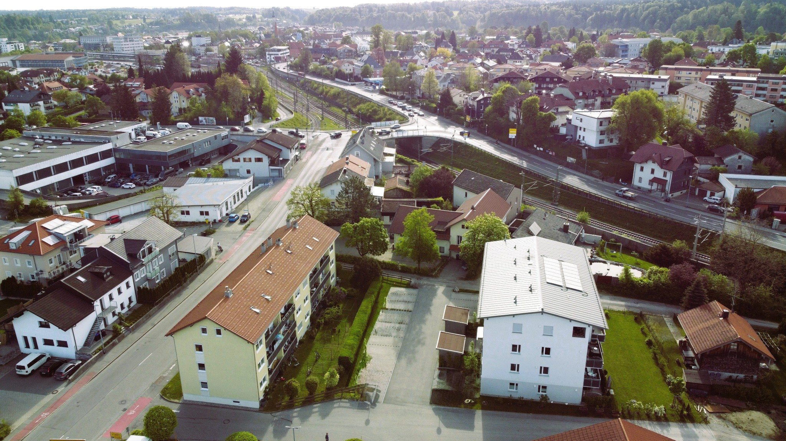
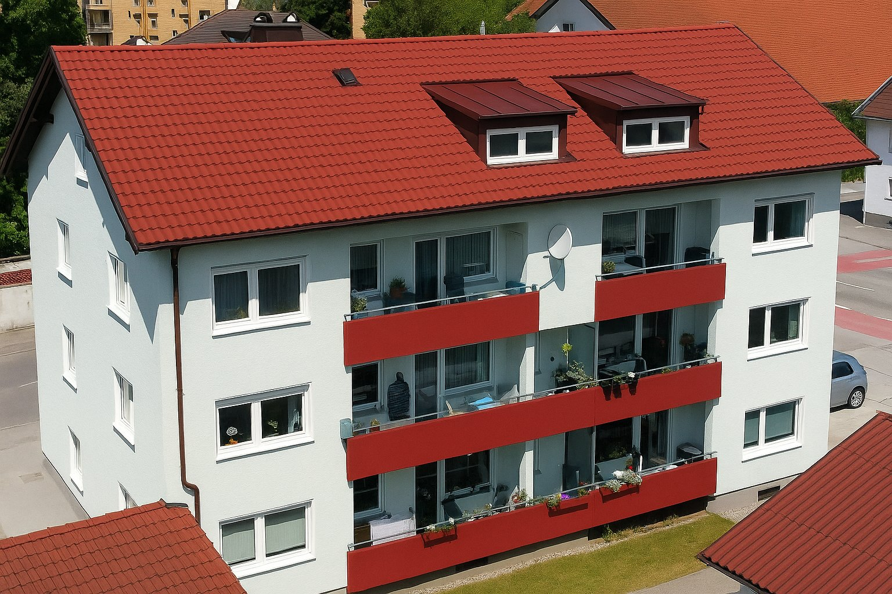
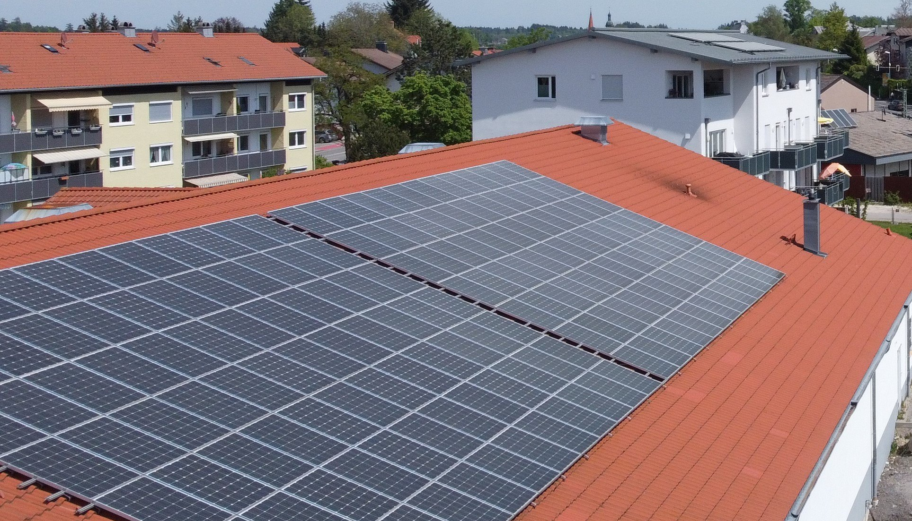

Hausmeister- & Objektservice
Regelmäßige Objektkontrollen, Betreuung von Allgemeinflächen, Sichtprüfungen und zulässige Servicearbeiten.

AREVEO bündelt operative Leistungen rund um Immobilien – mit klaren Zuständigkeiten, kurzen Wegen und einem objektbezogen definierten Leistungsumfang.
Gute Objektbetreuung ist mehr als die Summe einzelner Handgriffe. AREVEO verbindet laufende Kontrolle, Pflege und operative Unterstützung mit einer klaren Struktur. Regelleistungen können objektbezogen vereinbart, Sonderleistungen transparent ergänzt werden.
Der Schwerpunkt liegt auf wiederkehrenden operativen Leistungen und ausgewählten Zusatzarbeiten. Umfang, Intervall und Abrechnung werden passend zum jeweiligen Objekt definiert.
Regelmäßige Objektkontrollen, Betreuung von Allgemeinflächen, Sichtprüfungen und zulässige Servicearbeiten.
Rasen, Hecken, Sträucher, Laubarbeiten sowie die laufende Pflege von Grundstücken und Außenanlagen.
Pflege- und Rückschnittarbeiten an Gehölzen und Bäumen im zulässigen Leistungsrahmen sowie Unterstützung bei der laufenden Bestandskontrolle.
Räumen und Streuen definierter Wege, Zugänge und Flächen im vereinbarten Leistungsumfang.
Ausgewählte zulässige Bodenlege- und Montageleistungen, insbesondere im Zusammenhang mit Objekt- und Wohnungswechseln.
Allgemein- und Außenflächen, Leerstände, Entrümpelungen, Dokumentation sowie objektbezogene Einzelaufträge.

Statt einer unscharfen Sammelpauschale werden wiederkehrende Aufgaben, Intervalle und Sonderleistungen sauber getrennt. Das schafft Planbarkeit für Eigentümer und Verwaltung – und klare Zuständigkeiten in der Umsetzung.
Wohnimmobilien, Außenanlagen und technische Infrastruktur stellen unterschiedliche Anforderungen an die operative Betreuung. Die Bildwelt von AREVEO basiert auf eigenem, regional aufgenommenem Immobilienmaterial.



Für laufende Objektbetreuung empfiehlt sich ein klarer Rahmenvertrag mit objektbezogenen Leistungsbildern. Sonderarbeiten bleiben flexibel und können nach Bedarf ergänzt werden.
Flächen, Besonderheiten, Frequenzen und operative Anforderungen erfassen.
Wiederkehrende Leistungen und optionale Zusatzarbeiten eindeutig abgrenzen.
Pauschale oder Einzelauftrag mit nachvollziehbarem Leistungsumfang vereinbaren.
Leistung durchführen, Auffälligkeiten dokumentieren und bei Bedarf nachsteuern.
Für eine erste Abstimmung genügen Objektadresse, Nutzungsart und der gewünschte Leistungsumfang.
info@areveo.de